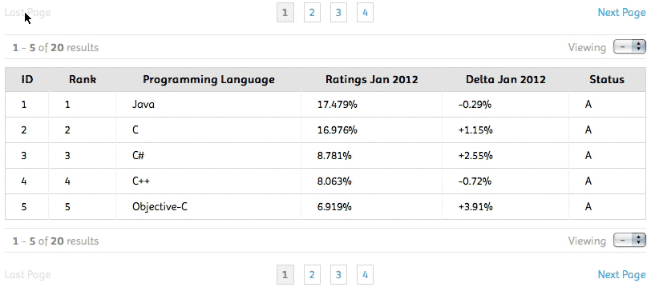

A easy way to generate next and last page buttons, breadcrumb links, and per-page result totals, as HTML.
Check out the demo provided with this package.
This package can be easily installed using Bower.
$ bower install poppy-pagination
Manual install:
| Filename | Role |
|---|---|
| poppy-pagination.min.js | The main script to be included from within your HTML document. |
| poppy-pagination.min.css | This style sheet that defines the "look & feel" of the results. |
It's as simple as defining the target element #container using the jQuery selector and defining page result options. An optional callback can also be defined for pre-processing result data.
$(selector).PoppyPagination(config, callback);
Add the following JavaScript/CSS between the <head></head> tags of your HTML document.
<script src="http://ajax.googleapis.com/ajax/libs/jquery/1.8.3/jquery.min.js"></script>
<script src="/path/to/poppy-pagination.min.js"></script>
<script>
$(document).ready(function() {
$('#container')
.PoppyPagination({
totalResults: 20,
perPage: 5,
startPage: 1
}, doSomething);
}
});
</script>
<link rel="stylesheet" type="text/css" href="/path/to/poppy-pagination.min.css">
..
<div id="container"></div>
<script src="http://ajax.googleapis.com/ajax/libs/jquery/1.8.3/jquery.min.js"></script>
<script src="/path/to/poppy-pagination.min.js"></script>
<script src="/path/to/tidy-table.min.js"></script>
<script>
$(document).ready(function() {
(function getResults(config) {
/**
* Get current page results from flatfile, or
* API service (using SQL LIMIT/OFFSET & FOUND_ROWS)
*/
var params = {
count: config.perPage || 20
};
if (config) {
// Calculate SQL OFFSET
params.offest = config.start * config.limit - config.limit;
}
$.getJSON({
url: '/path/to/script',
data: params,
success: function(data) {
var block = $('#container');
// Remove existing data.
block.TidyTable('destroy');
// Create table elements.
block.TidyTable({
columnTitles: data.columns,
columnValues: data.values
});
// Create pager elements.
block.PoppyPagination({
totalResults: 20,
perPage: 5,
startPage: (config.start || 1),
// Override UI language.
uiText: {
LAST_PAGE: 'Back',
NEXT_PAGE: 'Next',
RESULTS: '%first through %last of %total results',
VIEWING: 'Show'
}
}, getResults);
});
});
})({});
</script>
<link rel="stylesheet" type="text/css" href="/path/to/poppy-pagination.min.css">
<link rel="stylesheet" type="text/css" href="/path/to/tidy-table.min.css">
..
<div id="container"></div>
The following options can be passed to the plug-in main function as JSON
| Option | Description | Default Value |
|---|---|---|
| totalResults | total number of results in data-set | none |
| perPage | total number of results to output per page (optional) | none |
| startPage | page number of first viewable result | 1 |
| uiText | customize user interface text elements (optional) | UI language |
The perPage value is optional and is to be used in cases where you are processing a full data-set vs requesting as parts. When this option is not provided a select menu will be created to allows the user to define the per-page result.
You can update the predefined language by defining uiText with the following values:
| Name | Default Value |
|---|---|
| LAST_PAGE | Last Page |
| NEXT_PAGE | Next Page |
| RESULTS | %first - %last of %total results |
| VIEWING | Viewing |
When a callback function is defined a response object is returned. The values of this object reflect the current page results at the time of the event. The following code corresponds to the examples provided above. This object can be used to query new data from server-side application, or to pre-process data of returned results. For example, parsing object data so that only specific page results are visible.
function doSomething(obj) {
// Post-process event
if (obj.start == 2) {
alert('page 2');
}
else
if (obj.first == 4) {
alert('first result is 4');
}
else
if (obj.last == 7) {
alert('last result is 7');
}
}
Object values can be accessed as a token using the %name format when overriding UI language text.
| Name | Description |
|---|---|
| total | total number of results in data-set |
| pages | total number of pages to output |
| limit | total number of results to output per page |
| start | page number of first viewable result |
| first | number of first viewable result |
| last | number of last viewable result |
In order to support older web browsers, specifically Internet Explorer 7, this package requires jQuery 1.8.3. Furthermore, jQuery has recently dropped support for IE8 in version 2, so if there is no compelling reason to support these two web browsers it is recommended that you upgrade to the latest version of jQuery. If you still need to support IE8 please upgrade to jQuery 1.9+.
This package has been preconfigured to support QUnit headless testing using Travis-CI. If you plan on using another integration tool you will have to create a custom project that combines the use of QUnit and PhantomJS plugins. If headless testing in not available you can manually run test.html in your web browser.
I have included with this package a packed version (3.3 kB) and developers version (unpacked 9.1 kB)
You can always find the latest updates within this projects repository.
This projects repository is currently hosted on Github
https://github.com/nuxy/Poppy-Pagination
For feedback, bug reports, or other comments, feel free to contact me at: devel at mbrooks dot info
This package is distributed in the hope that it will be useful, but without any warranty; without even the implied warranty of merchantability or fitness for a particular purpose.
Poppy Pagination is provided under the terms of the MIT license.
Poppy Pagination ©2012-2015 Marc S. Brooks